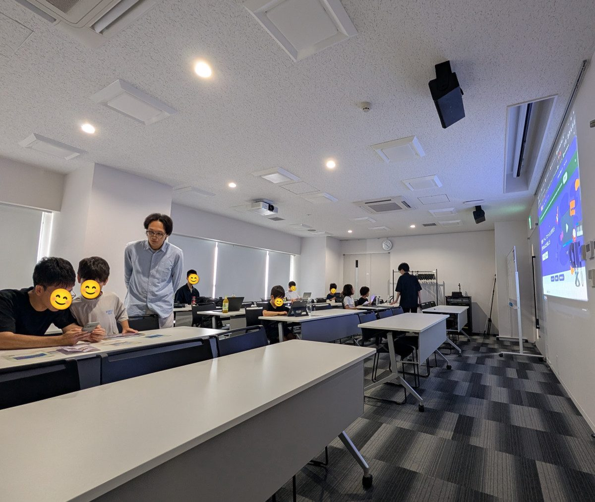
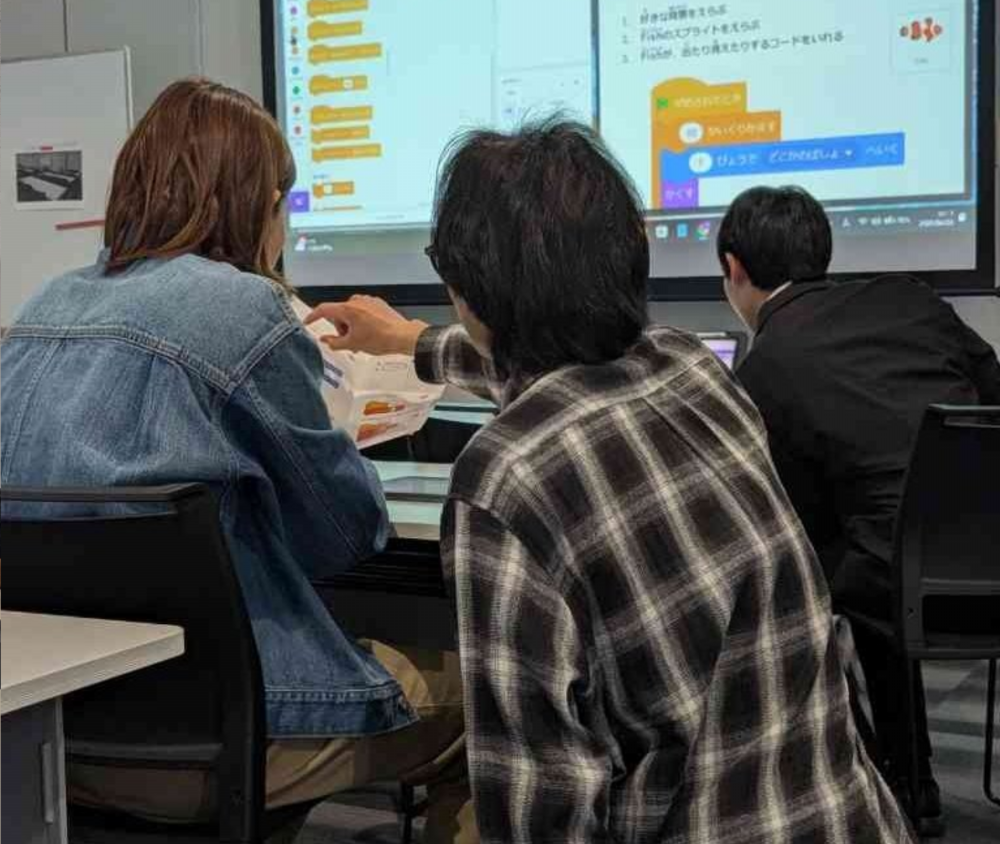
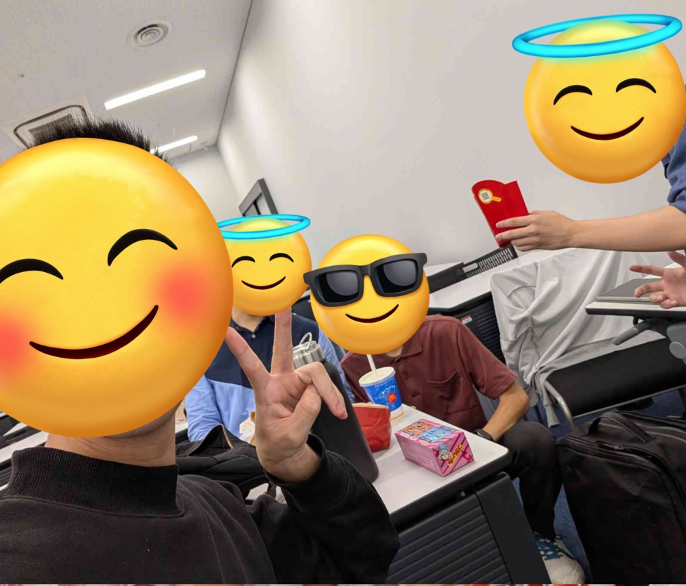
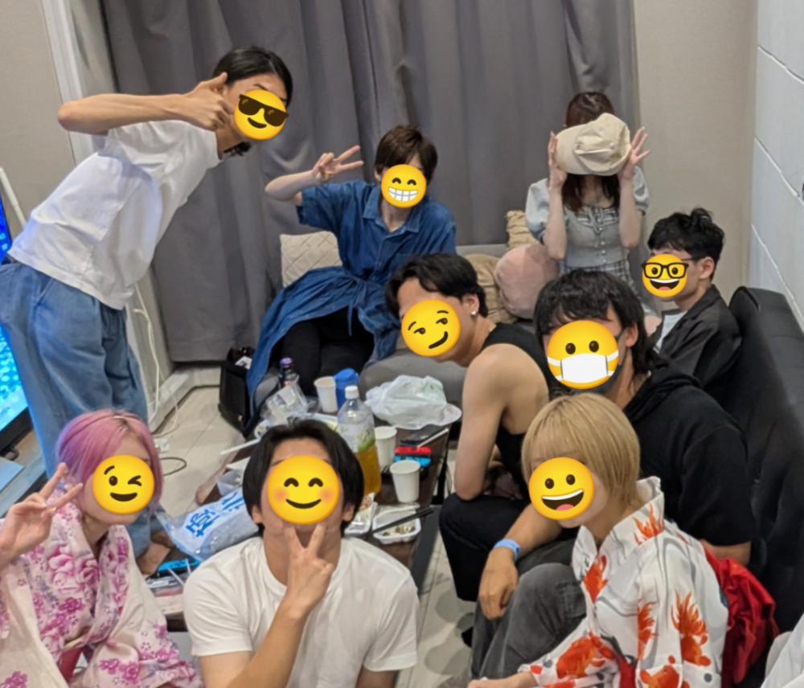
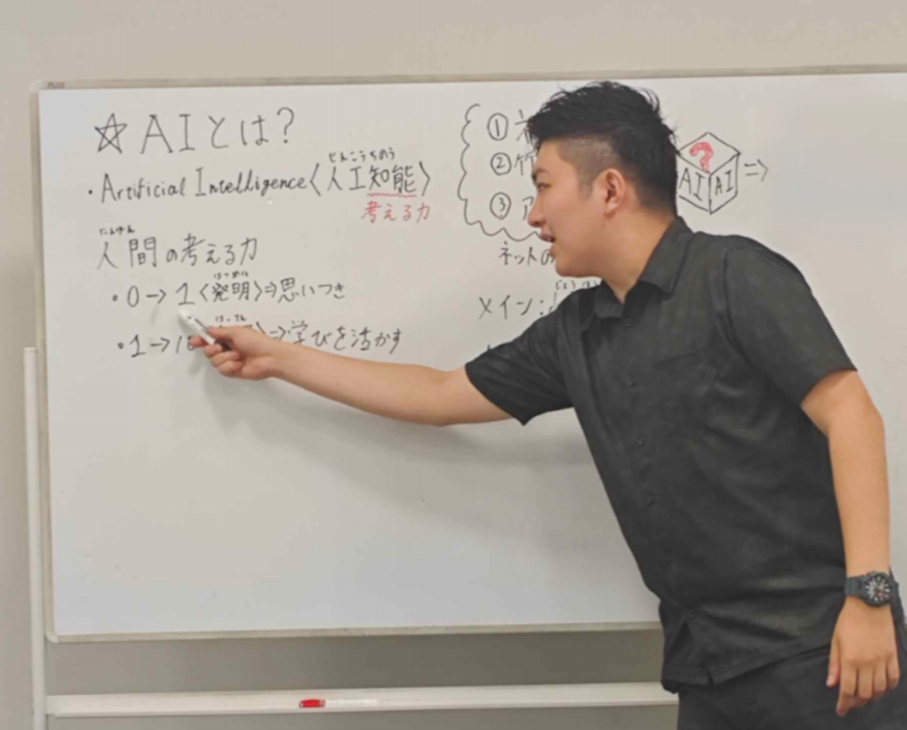

AIやScratchを使用したIT教育支援活動の豊富な経験があります。元塾講師やプログラミング教室講師が教えるためにお子様にも教えられ、IT業界関係の学生も多数在籍しているため、お年寄りやご両親にもお教えすることができます。
私たちのやれること
WORK
AIを使ったIT教育支援
WORK 01


ヲタサーのノウハウを活かした居場所づくり
WORK 02


大学で居場所がない人々の問題に取り組んできた私たちは、そのノウハウを活かし、不登校・ヲタク層を中心として地域の居場所づくりに取り組んでいます。
SNS運用やAI活用法などのノウハウ共有
WORK 03

AIを使用した豊富なIT教育支援活動の経験や、豊富な公式SNS運用実績を持っているため、社会人・ご年配の皆様にもノウハウ共有をさせていただけます。